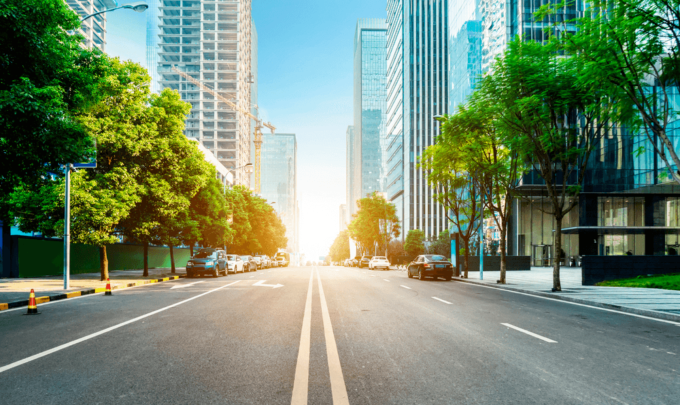
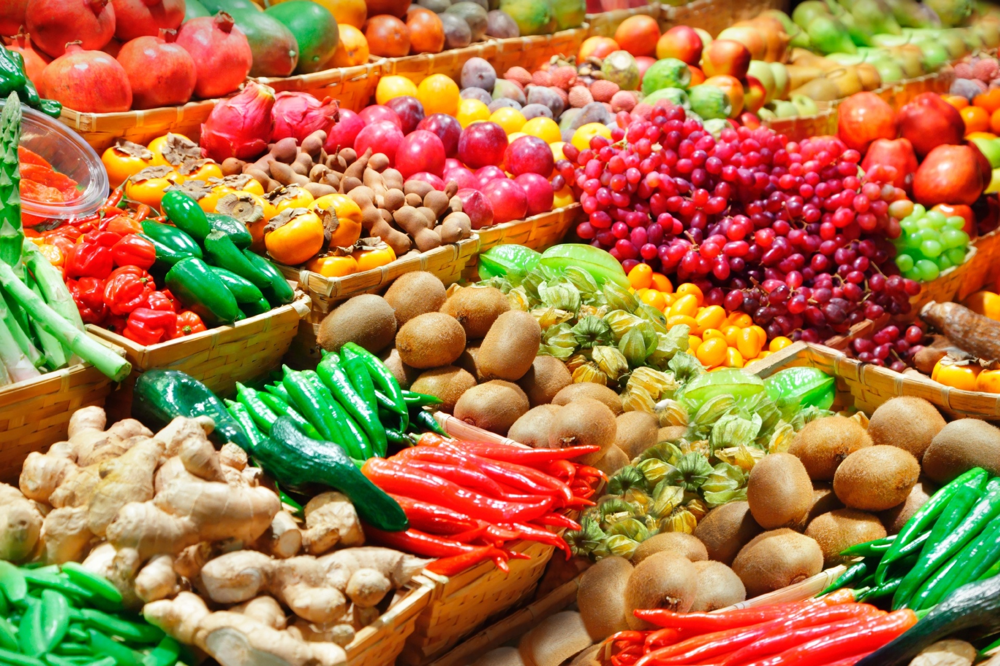
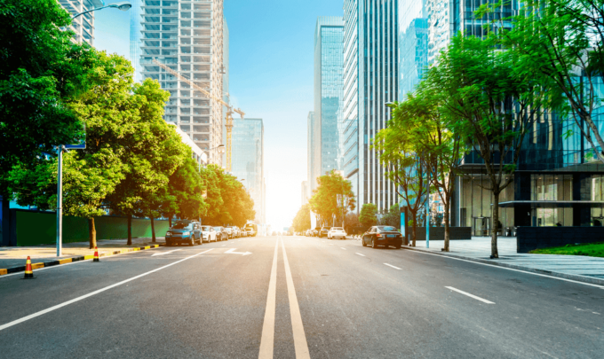
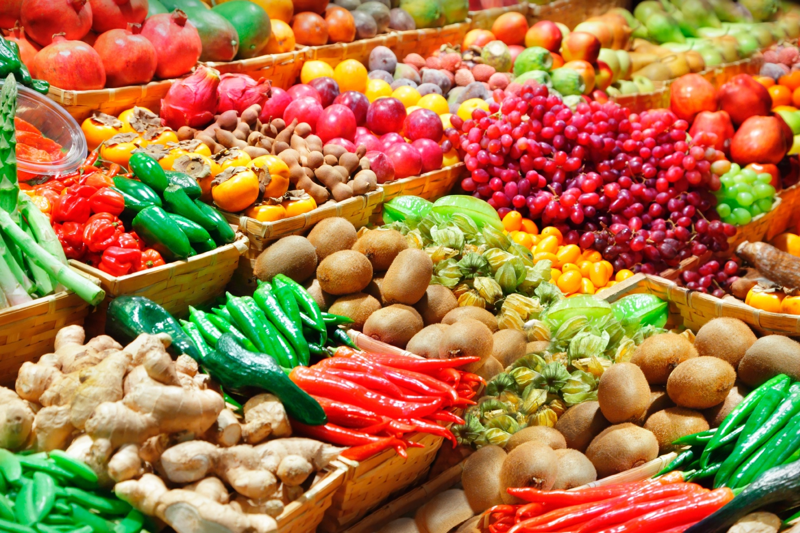

Campo e Cidade: Forças Complementares
A cidade pulsa com inovação, enquanto o campo cultiva a base de tudo. Juntas, essas realidades constroem o progresso de forma equilibrada.
Transformações e Conexões
Cada produto rural que chega à cidade carrega histórias de trabalho, cultura e natureza. Celebrar essa jornada é respeitar nossas raízes.
Contribuições Únicas
O Campo em Nossas Vidas
É no campo que nasce a base da nossa alimentação. Além de grãos, frutas e hortaliças, ele é berço de práticas sustentáveis, de saberes tradicionais e de culturas que preservam o planeta.
A Cidade e o Futuro
A cidade transforma o que o campo produz. Com seus centros tecnológicos, universidades e polos culturais, ela impulsiona a economia, inovações e soluções para o bem-estar coletivo.